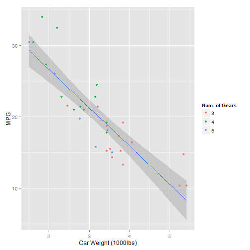

- I have nothing to pitch here
- So I'll try to do some random ranting and playing aound
- Here goes nothing!
misket
Coursera
I want to begin with expressing how much I like \(\pi\). It is a wonderful number and you encounter it virtually everywhere.
Its value is beyond my grasp. But is begins elegantly with \(3.1416..\) and has no end.
Did you know: \[\frac{22}{7} \approxeq \pi\] Cool isn't it!
What is the answer to 1 Answer to the Ultimate Question of Life, the Universe, and Everything?
You know the answer just Don't Panic
Don't forget your towel before moving ahead!
Let's try and load a library
library(ggplot2)
data(mtcars)
Finally a neat looking plot
plot <- ggplot(mtcars, aes(wt, mpg)) +
geom_point(aes(colour = as.factor(gear))) +
stat_smooth(method = "lm") +
labs(x = "Car Weight (1000lbs)", y = "MPG",
colour = "Num. of Gears")
I could not understand why it echoes to the center?
